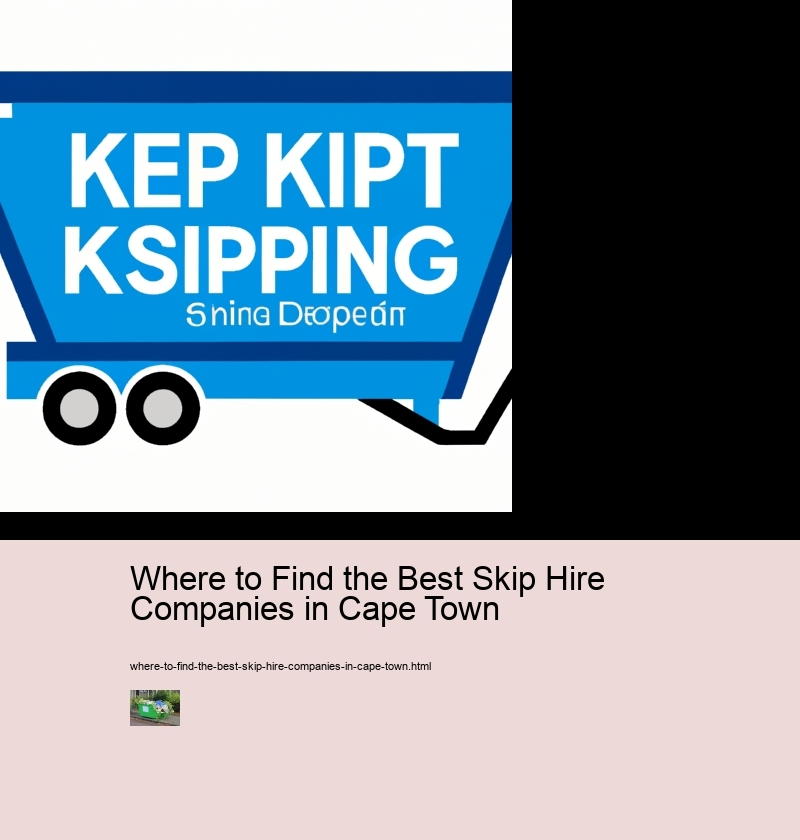

Where to Find the Best Skip Hire Companies in Cape Town
Materials recovery facilities
Benefits of Skip Hire Companies in Cape Town
Skip hire companies in Cape Town offer a wide range of benefits for those looking to dispose of large quantities of waste. Firstly, skip hire provides an easy and convenient way to clear your household or business premises quickly and efficiently. The skips come in various sizes so you can choose one that best meets your needs. Secondly, the cost associated with hiring a skip is often lower than other disposal methods such as bin collection services, making it more economical. Additionally, many skip hire companies provide on-site delivery and collection which saves time spent having to move heavy items yourself.
Moreover, using a professional skip hire company ensures that all waste is disposed of responsibly. They have the expertise and equipment necessary to handle hazardous materials safely while adhering to strict environmental regulations. As such, this helps protect the environment by reducing carbon emissions and preventing pollutants from entering waterways. Lastly, hiring a skip also helps reduce stress levels as you don't have to worry about transporting or disposing of large amounts of rubbish yourself – leaving you free to focus on other projects.
Where to Find the Best Skip Hire Companies in Cape Town - Garbage collection
- Materials recovery facilities
- Garbage collection
- Tarp systems
In conclusion, skip hire companies in Cape Town offer numerous advantages including convenience, affordability, safety and peace of mind – making them an ideal solution for anyone needing quick and efficient waste removal services. Ultimately, finding the best skip hire company depends on your individual requirements so take some time researching online before committing to any provider.
Factors to Consider When Choosing a Skip Hire Company
Finding the right skip hire company in Cape Town can be a daunting task. There are several factors to consider when deciding which one is best for your needs. Firstly, you should think about the type of service you require; from single use skips to multiple-use or even long-term contracts. Secondly, check out the company's reputation by reading reviews online and speaking to their customers directly. Thirdly, take into account their pricing structure and whether they offer any discounts or incentives. Finally, make sure that they offer reliable customer service and have an established track record in the industry.
In addition to these points, it's also important to evaluate the quality of their equipment; this includes everything from skip bins to trucks and delivery vehicles. Make sure that they're all well maintained and up-to-date with safety certification where applicable. It's also wise to enquire about what waste types they accept, as some companies may not accept certain hazardous materials such as asbestos or paint fumes. Furthermore, ask them if they provide any supplementary services like debris loading or onsite recycling solutions – this can help streamline the process significantly.
To conclude, choosing a skip hire company in Cape Town requires careful consideration of a number of factors including cost efficiency, quality of equipment and customer service provided. Doing your due diligence beforehand will ensure you select a reputable provider who meets your requirements perfectly!
Types of Skips Available
Skip hire companies in Cape Town offer a variety of skips to meet your needs. From mini skips to large builders' skips, there is something for every project. Mini skips are great for small-scale home renovations or garden waste removal. They come in various sizes, ranging from 2 cubic yards up to 8 cubic yards. For larger projects such as house extensions and building demolitions, larger builders' skips are available. These range in size from 8 cubic yards up to 16 cubic yards and can handle significant amounts of waste material.
Moreover, you will also find specialist skip types such as enclosed skips and drop door skips which provide extra security for hazardous or confidential waste materials. Enclosed skips have solid lids that ensure the contents remain safe and secure at all times, while drop door skips have hinged doors on the side so you can easily load them with bulky items such as furniture or machinery without having to lift them over the top edge of the skip.
Furthermore, there are also grab lorries available which are ideal for removing large quantities of soil and rubble quickly and efficiently - saving you time and hassle when tackling bigger jobs around the home or garden! Plus, if you need additional space for your skip hire then some companies even offer convenient drivewayside delivery services - offering an easier way to get rid of your unwanted rubbish without having to move it too far away yourself.
In conclusion, whatever type of skip you require for your project in Cape Town – be it a mini skip or large builder's skip – there are many reputable businesses offering competitively priced options so you can find the perfect solution no matter what your budget may be!
5 Best Skip Hire Companies in Cape Town
Finding the best skip hire companies in Cape Town can be quite a challenge. However, with some research and careful consideration, you can find the perfect company for your needs. Here are five of the best skip hire companies in Cape Town that you should definitely consider:
Firstly, there is Skipco. This business offers reliable service at an affordable rate and has been highly recommended by customers. Their experienced staff will provide you with all the information and advice to make sure your project runs smoothly. Additionally, they offer same-day delivery for urgent requests which makes them a great option for those in need of quick solutions.
Secondly, there is J&J Waste Disposal Services. They specialize in providing tailored services according to customer’s needs as well as offering competitive prices. Furthermore, their team takes pride in being punctual and efficient so you don’t have to worry about delays or problems during the process.
Thirdly, we have Rubbish Please Skip Hire Services who have years of experience providing quality services for both residential and commercial clients alike. What sets them apart from other companies is that they only use modern equipment which helps ensure a safe working environment for their staff while also delivering excellent results every time. Moreover, they always strive to offer competitive rates that won't break your budget.
Fourth on our list is Kleanit's Skip Hire & Removal Company who provide top notch service at very reasonable costs. In addition to this, their team consists of certified professionals who take extra care when dealing with difficult waste materials such as hazardous liquids or sharp objects ensuring no one gets hurt during removal process. Plus, they also guarantee quick response times so you won't have to wait long before receiving help when needed most urgently.
Last but not least is Super Cheap Skips whose main goal is to provide customers with high quality service without compromising on affordability or convenience. Not only do they deliver skips within 24 hours but also offer flexible payment options according to individual requirements which makes it even easier for customers to get what they need without having any financial worries whatsoever!
Overall, each one of these five skip hire companies provides great services at fair prices making them ideal choices when looking for reliable solutions in Cape Town area. Thus, if you want dependable assistance then these are definitely worth considering!
Cost Comparison for Different Skips Sizes
Finding the best skip hire companies in Cape Town can be overwhelming. With so many options, it's difficult to decide which one is right for you. Cost comparison for different skip sizes is an important factor to consider when selecting a company. Luckily, there are several ways to research and find the best deals on skip hire services in Cape Town.
First, compare prices online.
Where to Find the Best Skip Hire Companies in Cape Town - Tarp systems
- Materials recovery facilities
- Garbage collection
- Tarp systems
Next, ask around! Local friends and family members who have used skips before are great sources of information regarding cost comparisons between different sizes and services offered by various companies in your area. They can provide firsthand experiences about customer service, quality of materials used and overall satisfaction with their experience hiring a skip bin in Cape Town.
Moreover, don't forget to read through contracts carefully before committing to anything! Although most reputable companies will provide clear terms of agreement upfront, it's still important to read through everything thoroughly prior to signing on the dotted line. This way you know exactly what kind of fees will be charged for each size of skip bin and other associated costs such as delivery charges or environmental disposal fees if applicable.
Ultimately, researching cost comparison for different skips sizes takes time but can save you money in the long run! With careful consideration and thorough investigation into various companies offering services in Cape Town – you'll be able to find the best deal that fits your needs perfectly without breaking the bank! Moreover, take advantage of all available resources; online reviews, insights from friends or family members who've used skips before and most importantly – read through contracts carefully before committing yourself financially! By doing so -you'll ensure that renting askip bin in Cape Town doesn't end up costing more than necessary!
Tips for Reducing Waste Disposal Costs
Finding the best skip hire companies in Cape Town can be a daunting task, but with some tips for reducing waste disposal costs, you can save money and find the perfect service provider.
Where to Find the Best Skip Hire Companies in Cape Town - Materials recovery facilities
- Materials recovery facilities
- Garbage collection
- Tarp systems
Moreover, try to minimize your waste disposal per order by having an accurate estimation of your needs before hiring a skip hire company. This way you won't end up paying for space that isn't fully utilized. Furthermore, ask your company if they offer recycling services as this could reduce the amount of waste sent to landfill sites and ultimately result in lower costs.
Conversely, it's also important to consider convenience when selecting a skip hire company in Cape Town. Be sure to opt for one that has flexible opening hours so you can access their services at times that suit you best. Moreover, check whether delivery and pick up are included in their fee structure - this could potentially save you time and money.
In summary, finding the best skip hire companies in Cape Town doesn't have to break the bank if you keep these tips for reducing waste disposal costs in mind: take advantage of discounts; minimize waste disposal; consider recycling services; select one with convenient opening hours; and look out for delivery/pickup fees. With these helpful hints, you'll be able to find an affordable yet reliable service provider in no time!